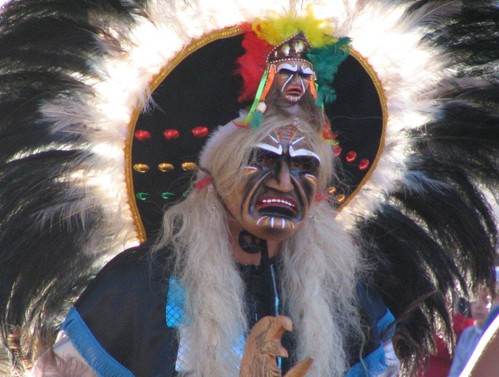

Por su sistema de creencias se les ha encasillado de animistas y chamanistas; poseían un culto a los seres de la naturaleza y la creencia en una divinidad máxima. Desde él se mantienen aún por transmisión oral resistente, este sistema religioso aunque muchos han adoptado a su modo el cristianismo, en particular el llamado pentecostal ya que sus chamanes en muchos casos se convirtieron en pastores protestantes. En todo caso aún hoy gran parte de la población qom acude a sus chamanes o pio'oxonak que son terapeutas o sanadores.
Antes de su aceptación del cristianismo era frecuente entre ellos el infanticidio de los recién nacidos, costumbre que se debía a la escasez de recursos alimentarios que solían sufrir. Por contrapartida, los hijos que sobrevivían eran tratados con especial dedicación y afecto.
